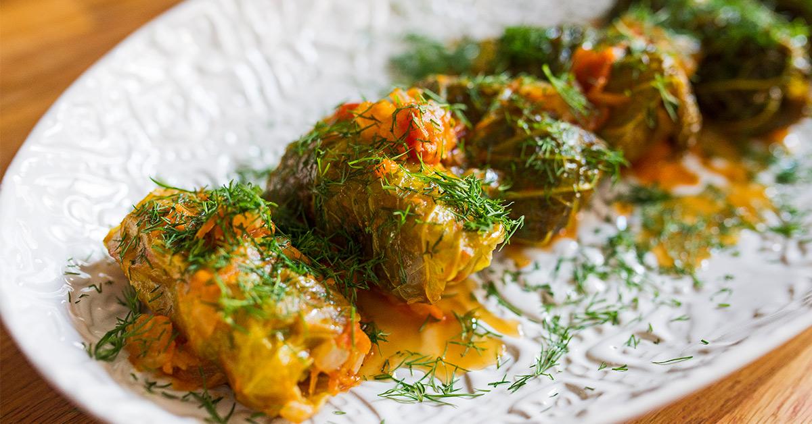

Holubtsi

Holubtsi Recipe
Pull a stool up to the table and make sure you're dressed comfortably, this home recipe is going to make
you want to stick around for a while. Fresh Ukrainian cabbage boiled, blankets a hidden treasure trove of
rice, ground meat (most popuularly a beef and pork duo), finely diced onions and carrots
and a creamy paste made from ripe Ukrainian tomatoes. Each of these fine ingredients on their own is enough
to make you kick of your penny loafers and loaf about feeling accomplished for the day. It is a hearty and
rich food. Having said that, it is full of what you need to feel fueled like a jet engine shortly after. In
typical Ukrainian fashion, good isn't good enough, so lets toss some spices, herbs and succulent sauce into
the mix and make these babies sweat. Now that I've teased you and got you hungry
lets cut to the chase, what's in them?
Holubtsi Ingredients:
- 1 big carrot
- 1 1/2 cup of water to make it sweat
- 1 large cabbage
- 1 heaping spoonful of tomato paste
- 1 spoonful of sugar
- 2 spoonfuls of olive oil
- 1 onion sized to preference
- salt to taste
- 9 ounces ground beef
- 9 ounces ground pork or chicken
- 1/4 cup of rice (before cooked)
- chopped dill to taste
- Sour Cream for a topping
Holubtsi Blueprints
- 1a. Bring a pot of water large enough for you cabbage to open up to a boil.
- 1b. Once the cabbage starts to open up and the leaves begin to be easily
torn using tongs and become a big transluscent, transfer the cabbage from the
large pot into enough iced water to submerge it.
- 1c. Peel leaves keeping as much of the leaf in tact as possible,
a knife can come in handy to cut at the base, it shouldn't be too tough to easily cut.
- 2a.Heat up olive in saucepan or large pot.
- 2b.Add half of onions and all of carrots and cook until soft.
- 2c.Add tomato paste and sugar and cook for a minute.
- 2d.Add the tomaotoes, water and bay leaves and let it boil until about half of the water is gone.
- 2e.Remove from heat and salt to taste.
- 3a.Combine mixed up rice, meat, and rest of onions inside of cooked cabbage leaf.
- 3b.Roll it up like a sleeping bag.
- 3c.Put the holubtsi in the pot of broth with the folds facing down so it doesn't unfold.
- 3d.Heat to a simmer and then start a timer for 35-45 minutes.
- 3e.Top your Ukrainian Holubtsi with dill and sour cream and enjoy!